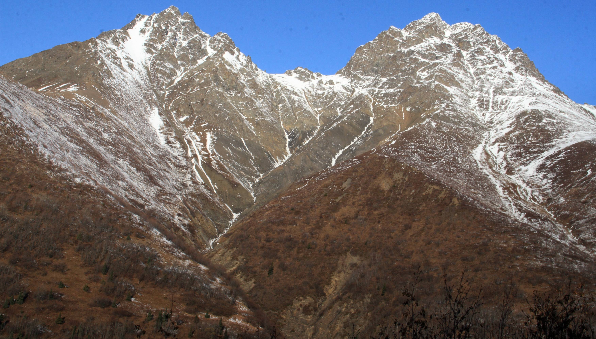
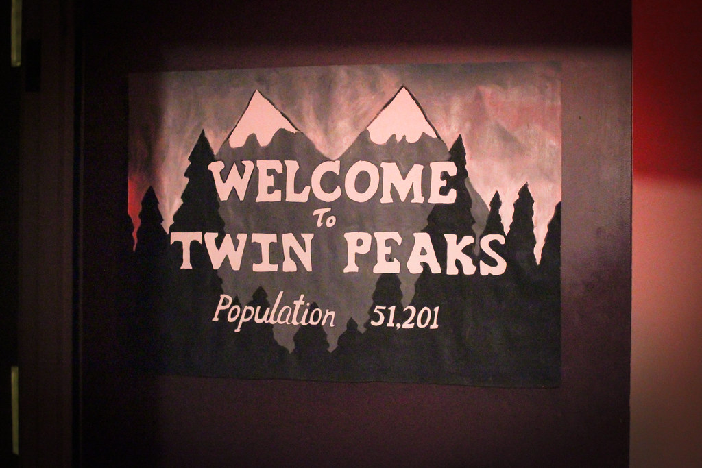
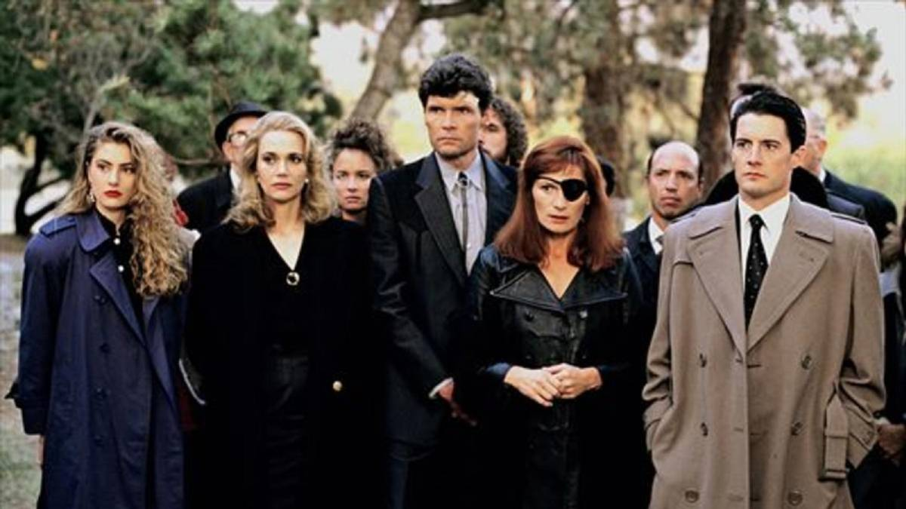
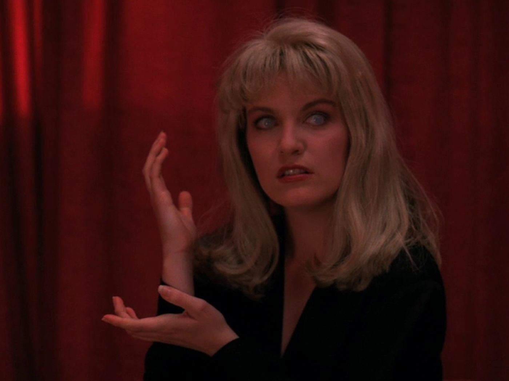
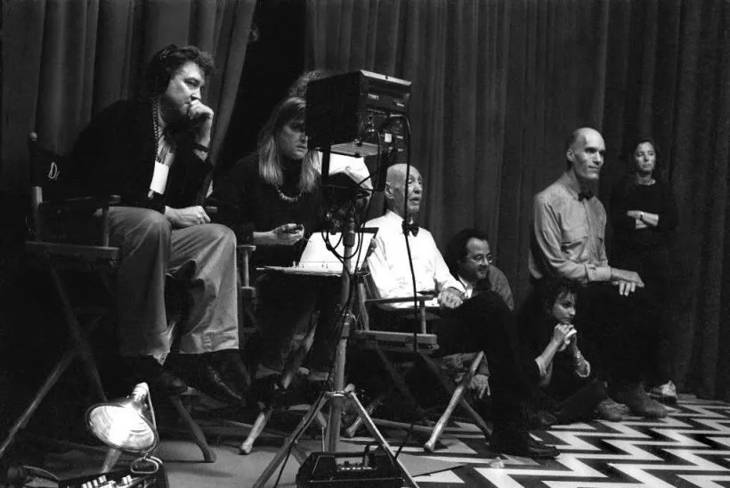

Bienvenido a nuestra página web dedicada a Twin Peaks, una de las series de televisión más icónicas y enigmáticas de todos los tiempos. Sumérgete en el mundo de David Lynch y Mark Frost, donde el suspense, la intriga y lo sobrenatural se fusionan para crear una experiencia única.
Twin Peaks, la serie de culto de los años 90, se desarrolla en un pintoresco pueblo del noroeste del Pacífico, y gran parte de su atractivo radica en su entorno escénico. La serie fue filmada en su mayor parte en el hermoso estado de Washington, un lugar de naturaleza exuberante y paisajes impresionantes. Navega a través de nuestra página para descubrir los lugares emblemáticos donde se filmó la serie y sumérgete en la atmósfera inigualable de Twin Peaks.
La serie no solo es famosa por su entorno, sino también por su elenco de personajes inolvidables. Explora la página web para conocer más sobre los actores y actrices que dieron vida a los habitantes de Twin Peaks, como Kyle MacLachlan (quien interpreta al agente especial Dale Cooper), Sheryl Lee (Laura Palmer) y Sherilyn Fenn (Audrey Horne). Descubre cómo sus actuaciones magistrales contribuyeron al atractivo duradero de la serie.
En Twin Peaks, nada es lo que parece, y nuestra página web está repleta de información sobre los enigmas y secretos que mantuvieron a los fanáticos intrigados durante dos emocionantes temporadas. Desde el asesinato de Laura Palmer hasta las intrigas y conspiraciones que envuelven a los habitantes de Twin Peaks, te adentrarás en un mundo de misterio y suspenso que aún perdura en la memoria de los espectadores.
Si eres un fanático apasionado de Twin Peaks o estás descubriendo esta serie icónica por primera vez, nuestra página web es el lugar perfecto para explorar sus aspectos más destacados, descubrir la belleza de sus lugares de filmación y conocer a los actores detrás de los personajes inolvidables. Prepárate para sumergirte en el mundo fascinante y misterioso de Twin Peaks, donde lo sobrenatural y lo mundano se entrelazan de maneras que te dejarán perplejo y cautivado. ¡Disfruta de tu visita!
